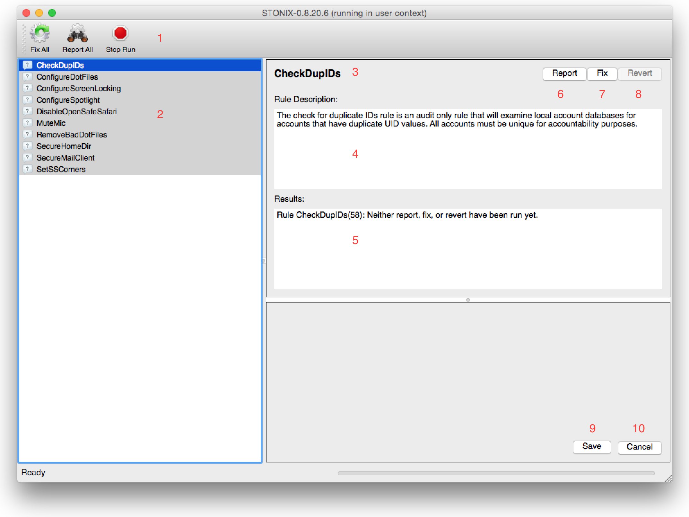

Graphical User Interface
When run from the command line without any options, stonix will bring up the following interface:
This mode is running Stonix in User mode. Some configurations need to be run
in the user's home directory, and when mounting remote directories, the root
user may be prevented from setting any values in that users home directory, so
some rules need to be run in "User" mode to ensure user configurations are set
securely.

- Toolbar - One can operate the full list of rules from these buttons.
- List of rules to be run in the current user/root context.
- Name of the highlighted rule.
- Description of the highlighted rule.
- The results of a Stonix run for the currently highlighted rule.
- Run the currently highlighted rule in report mode.
- Run the currently highlighted rule in fix mode.
- If the rule has an "undo" feature, this button will be enabled.
- If the rule has a configurable configuration item, save changes to the configuration.
- Cancel the run of the rule.
The rule list will have the background of each rule change color once the fix/report
run is complete.
- Green: System correctly configured for this rule.
- Yellow: Optional rule - Not configured correctly for this rule.
- Red: System NOT configured correctly for this rule.
The following is an image of Stonix running in Admin context in Report mode,
where some of the rules have not yet completed their run.

The Mac OS version has a wrapper that allows a regular user to run Stonix as
an administrator.